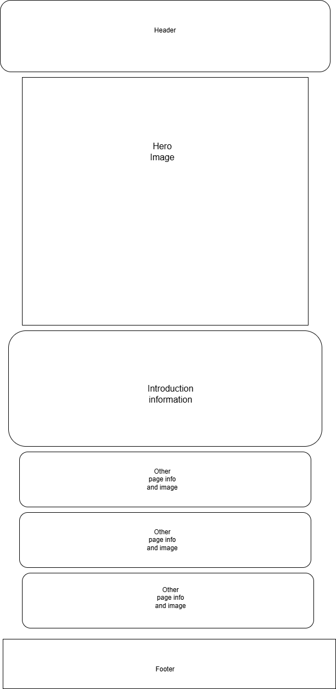

Site Name
Travels By Trish. This was chosen because I love to travel and share my travel experiences, and my name is Patricia. Trish was a nickname given to me by my nieces and nephews.
Site Purpose
The purpose of this site is to not only show my personal travels, but also to show how traveling can be done in a cost-effective way. It highlights hidden gems and provides overall travel advice and inspiration.
Scenarios
- When are the best times to travel Europe?
- What areas of my trip can I save money on, and when is it best to pay more?
- How can I save money on my holiday?
- What is the cheapest place to travel to?
Color Schema
The primary color (#02512B) is used for headings and accents.
The secondary color (#FFFABE) is used as an accent color.
White is used as the main background, and black is used for some text.
Typography
Merriweather is used for heading text.
Roboto is used for body text.
Wireframes
Mobile View
Desktop View